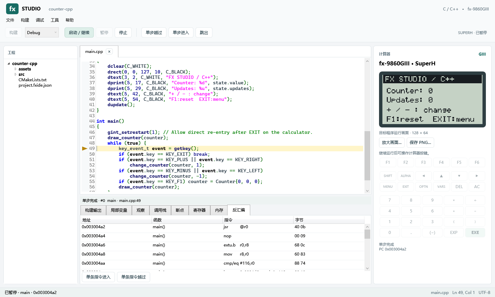

新增 MCP stdio 服务通过12组实际原生构建/调试流程检查：中文路径工程、ELF/G1A、源码与指令断点、变量/成员/内存/反汇编、真实按键/PNG画面、操作取消和关闭。另5组传输边界检查验证版本/参数、中文重试去重、取消竞争、超长输入、stdout堵塞时退出及1024操作后预留关闭容量。65项Core检查重新通过；Automation独立165项检查覆盖参数/状态、真实C++成员、目标调用禁用、编译失败诊断与构建取消。
中英文界面各7组检查通过真实WPF处理器和GDB/模拟器，涵盖暂停说明、保留检查器页、指令单步、断点启停、实时放大窗口和只读源图片预览。桌面CUA截图超时，实时可访问性树确认main停点；布局由实际WPF视觉树渲染并目视检查，未声称所有鼠标/系统文件对话框交互均经CUA验证。
新gint探针执行裁剪、多边形、圆/椭圆、越界线、透明与局部图片、自定义字体，7位检查标志127；四档灰度及关闭灰度恢复均通过。此组结果来自同一冻结工具链和模拟器，不是实机LCD响应/速度验收。
自动化独立会话尚不接管GUI已有会话；完整Casio OS、完整fxSDK主机命令、资源导入向导/自动压缩/转换后资源预览尚未完成。参阅逐项能力说明、稳定接口约定及包内validation记录。
| 项目 | 已执行 | 结论 |
|---|---|---|
| C / C++ 新示例 | Debug、Release 共四种组合；校验源文件未变、G1A头、所有ELF加载段与payload、Debug DWARF | 全部通过；G1A分别26,020 / 25,924 / 26,020 / 25,972字节 |
| 真实按键与画面 | 四个新G1A中按PLUS；计数与画面0→1；暂停发布新framebuffer | 全部通过 |
| 源码调试 | C/C++ Debug 的main断点、next、step进入clamp_counter、两次finish、条件/访问断点、变量/参数、指针/引用、栈、寄存器与内存 | 新示例18组运行/调试断言通过；条件与访问断点另有真实SuperH协议测试 |
| C++17运行库 | 16轮vector分配/操作、长string操作、嵌套RAII；读取真实变量并观察PASS画面 | result=328，析构32次，heap检查63/63；G1A39,120字节 |
| 完整GUI路径 | WPF真正调用构建服务，再加载配对产物、启动GDB/模拟器，于main.cpp:49停止 | 源码高亮、真实屏幕与调试面板联动通过 |
| 搬移与依赖 | 完整运行目录搬移；全新设置；中文/单引号工程路径；仅Windows系统PATH；无全局.NET SDK；自动发现随包组件；C/C++再次构建 | 通过；英文GUI也实际渲染检查 |
离线复验使用仅Windows系统PATH、无全局编译器/Python/CMake/.NET SDK的环境，并将HTTP/HTTPS代理指向拒绝连接的本机端口；构建工具均从新目录加载，无下载步骤。没有禁用整个Windows网络接口，GDB与模拟器仍使用本机回环通信。没有更改用户已有WSL服务、发行版或防火墙。
0.1.0仅验证了中文工程路径，未覆盖SDK安装路径也包含中文且无短文件名的情况。本版自动创建经SHA-256核验的英文路径SDK缓存；首次约400MB，后续复用，SDK变化后使用新的快照。已从原中文发行目录成功构建，并在另一个含中文、空格、单引号的全新安装目录完成GUI构建、断点、屏幕与C/C++ Release验收。
新增缓存回归验证了同内容复用、损坏恢复、中断复制重试、同长度同时间戳内容更新。65项Core检查、构建辅助检查、真实取消/失败和18组新示例调试断言重新通过。独立重启探针连续命中main四次，初始化数据恢复42、BSS恢复0、画面有效；模拟器OS菜单为空实现，退出后会立即重启。两个模板已启用标准gint重入设置，文件预算改为2,000,000字节；设备证据及可复用组件见KhiCAS复查报告。
| 检查 | 已观察结果 |
|---|---|
| Core自动检查 | 65项通过：MI解析/乱序响应/取消/进程失败/并发释放、产物配对/SHA、工程搬移、冻结调试文件等 |
| 模拟器协议 | 55项通过：真实SH指令、分支延迟槽、访存监视点、非法输入、暂停时钟、按键、帧和退出等 |
| 构建辅助脚本 | 13项中9通过；4项符号链接测试因本机缺创建符号链接权限而明确跳过。短路径别名导致的递归暂存另有实际Windows回归，已通过 |
| 取消与失败 | 真实CMake失败会撤销旧manifest；等待中的原生进程树取消后没有继续执行哨兵写入，原工程保持原样 |
| 历史配对防错 | CAS01的3个加载段及105,288字节匹配；相同ELF配CAS02明确拒绝，首差异0x0030022A |
| GUI审查修复 | 停止/启动竞态、旧观察值回写、外部编辑冲突、断点行号跟随、短路径边界、导出文件校验与当前执行行高亮 |

这张图来自实际WPF视觉树，程序停在源码行，右侧由同一SuperH G1A执行绘制。没有注入假变量或绘制替代预览。
源代码包保留 tests/FxStudio.Core.Tests、tests/test_build_project.py、tests/test_native_paths.py、tests/test_native_sdk_cache.py、tooling/validate_native_sdk.py、tooling/validate_relocated_package.py 和模拟器/新样例测试。包内 Verify-Package.ps1 可离线复核逐文件SHA-256。